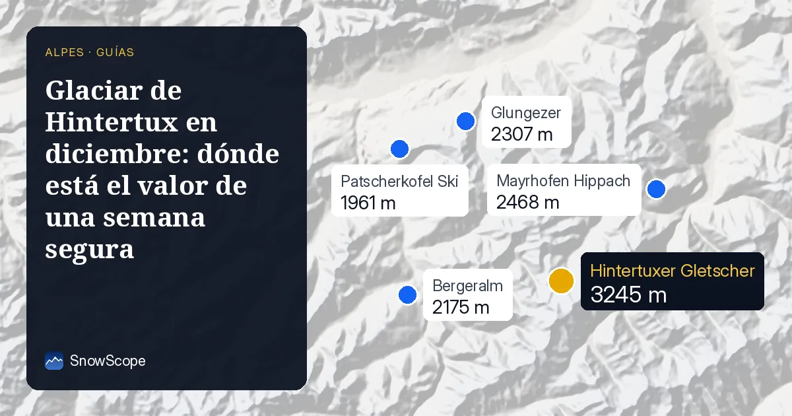

Glaciar de Hintertux en diciembre: dónde está el valor de una semana segura
La cuestión de la nieve en Hintertux está resuelta: en un 15 de diciembre típico la cumbre (3245 m) acumula 98 cm, y en la semana del 15-21 de diciembre cada uno de los 46 inviernos registrados tuvo 30 cm o más allá arriba. La verdadera elección es si el precio y el terreno se ajustan a tu semana.
Consulta la previsión de nieve en tiempo real de Hintertuxer Gletscher en la app SnowScopeEspesor de nieve, alertas de nieve polvo y mapa 3D, gratis.
Cumbre a media montaña: la nieve es fiable
A media montaña (2372 m) un 15 de diciembre típico tiene 52 cm. En la semana del 15-21 de diciembre, 87 de cada 100 inviernos tuvieron 30 cm o más; en la semana de Navidad eso sube a 93 de cada 100. Incluso un año flojo (1 de cada 10 inviernos) deja 44 cm en la cumbre el 15 de diciembre, y el invierno pasado, que fue más débil que la media, aún entregó 44 cm allá arriba.
La nieve en la cumbre se mantiene gruesa porque cae temprano. El primer día con 30 cm en el suelo en la cumbre es el 29 de septiembre; a media montaña es el 23 de octubre. Para diciembre, el glaciar acumula meses de nevadas.


El problema del valle en diciembre
La estación base está a 1500 m, donde diciembre es escaso. Un 15 de diciembre típico tiene solo 16 cm allí, y solo 7 de cada 100 inviernos tuvieron 30 cm o más en la semana del 15-21 de diciembre. El primer día habitual con cobertura suficiente para esquiar seguro en el valle es el 7 de enero.
En diciembre en Hintertux planificas esquiar la mitad superior y usas los remontes para descender. Las pistas bajas son un bonus si la nieve es más abundante que lo normal, no el plan.
Precio: tarifa plana, sin descuento de diciembre
Un forfait de un día para adulto cuesta EUR 82 toda la temporada; un pase de 6 días es EUR 399. No hay una tarifa más barata antes de Navidad, así que diciembre cuesta lo mismo que febrero. Esto es diferente de los resorts que ofrecen un precio de pre-temporada.
El ahorro es para familias: niños nacidos después del 1 de enero de 2021 esquían gratis con un adulto (necesitas DNI). Para una familia con un hijo pequeño, ese cambio es mayor que cualquier descuento de tarifa.
Cómo se compara este invierno con el pasado
La nieve de diciembre en la cumbre se ha mantenido estable durante 46 inviernos: el promedio fue 95 cm en los primeros 15 inviernos y 101 cm en los últimos 15. El glaciar mantiene su promesa de diciembre. A media montaña el panorama es diferente: el promedio de diciembre bajó de 54 cm en los primeros 15 inviernos a 45 cm en los últimos 15.
Esa tendencia importa si quieres esquiar las pistas superiores durante toda la semana. Media montaña fue más fiable en el pasado, pero aún se mantiene por encima de la línea de confort de 30 cm en la mayoría de los años.
Hintertux versus Kitzsteinhorn
El Kitzsteinhorn sobre Kaprun es la comparación glaciar más cercana. Ambos cobran EUR 82 por un forfait de un día en la temporada principal. En Kitzsteinhorn un 15 de diciembre típico tiene 137 cm en su cumbre (3024 m), pero solo 40 cm a media montaña (1894 m). Hintertux tiene 52 cm a media montaña el mismo día con el mismo precio de forfait.
Para un pase de 6 días de diciembre, Hintertux cuesta EUR 399 contra EUR 440 de Kitzsteinhorn. Si quieres esquiar las pistas medias durante una semana en diciembre, Hintertux ofrece más nieve y mejor relación de valor.
Cuándo reservar este glaciar
Elige Hintertux si tienes una semana fija en diciembre, no puedes cambiar fechas y quieres certeza en la cumbre. Los números respaldan esa elección. Si puedes esperar un buen pronóstico o mover tu semana, un resort de pueblo alto con un precio de pre-temporada puede costar menos y darte más variedad.
Consejos para esquiadores
- Planifica esquiar desde aproximadamente 2372 m hacia arriba en diciembre; usa los remontes para descender. Las pistas del valle rara vez son esquiables en diciembre.
- Lleva prueba de nacimiento para niños nacidos después del 1 de enero de 2021; esquían gratis con un adulto (DNI requerido).
- Diciembre a 3245 m es frío y a menudo ventoso. Empaca una máscara facial, guantes de repuesto y calentadores de mano.
- Esquiar fuera de pista en un glaciar significa grietas ocultas; ve solo con un guía y consulta el boletín oficial de aludes de Avalanche.report – Euregio Tirol.
Sobre estas cifras
Los espesores de nieve de las estaciones son la nieve más profunda en las pistas altas en la fecha indicada; son estimaciones para una zona, no una medida en un punto. Las previsiones pueden cambiar. Consulta siempre el boletín oficial de aludes antes de salir fuera de pista.
Boletines oficiales de aludes: Avalanche.report – Euregio Tyrol
Citar este informe
Para investigación, docencia o prensa: cifras y gráficos reutilizables libremente bajo CC BY 4.0 con esta cita.
SnowScope (2026), Glaciar de Hintertux en diciembre: dónde está el valor de una semana segura, https://snowscope.app/blog/es/2026/11/hintertux-glacier-december-value-ski-week.html, consultado el 2026-11-14
SnowScope (Atlas Labs). (2026, November 14). Glaciar de Hintertux en diciembre: dónde está el valor de una semana segura. SnowScope snow reports. https://snowscope.app/blog/es/2026/11/hintertux-glacier-december-value-ski-week.html
BibTeX
@misc{snowscope2026hintertuxglacierdecember,
author = {{SnowScope (Atlas Labs)}},
title = {Glaciar de Hintertux en diciembre: dónde está el valor de una semana segura},
year = {2026},
month = nov,
howpublished = {\url{https://snowscope.app/blog/es/2026/11/hintertux-glacier-december-value-ski-week.html}},
note = {Published 2026-11-14 13:29 UTC; accessed 2026-11-14}
}· CC BY 4.0 · Métodos, datos y herramientas →
Sigue Hintertuxer Gletscher
Gratis: un aviso cuando llega la nieve y la previsión cada mañana.